相信大家对Windows资源管理器导航栏左右键的两个蓝色坨坨不陌生。
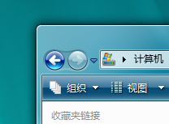
也许你心血来潮想修改它，聪明的你定位到C:\Windows\system32\browserui.dll，并直接用ResourceHacker找到对应句柄开始预览图片。
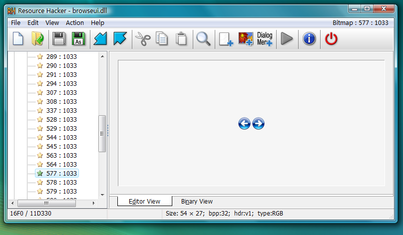
但是导出之后发现图片被带上了黑底！可是它明明在资源管理器中和ResourceHacker里带透明底地显示啊，这该怎么办？
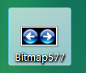
一个误区
在大家的刻板印象中，bmp是一个古老的位图格式，不像png那样可以存储alpha通道，我之前也是这么认为，事实上，BMP最初确实只有24位色深版本，后来，微软通过引入BITMAPV4HEADER和BITMAPV5HEADER这两种新的文件头结构来支持Alpha通道。
让我们来看看这张图的文件头，开头就是42 4D————这是标准的BMP，在文件头的0x1C（也就是偏移28个字节）存储的两个字节分别是20 00。
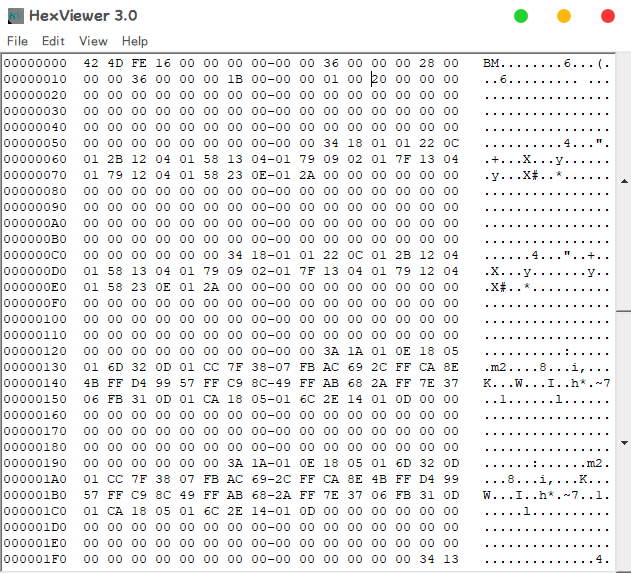
值得注意的是，BMP采用小端序（低位在前）所以我们要反着读，0x0020，换算成十进制正好是32。这意味着它就是一张标准的32位图，每个像素占用32位（即4个字节），包含红绿蓝三个颜色通道以及一个额外的透明度（Alpha）通道，支持半透明效果。
好了，废话扯的有点多了，如果图片本身就有透明通道，去掉黑底就简单多了，我这里有两种方法。
用Photoshop删掉黑底
直接用Photoshop打开bmp图片，在图层面板里可以看到“背景”，点击旁边的小锁图标解锁，让它成为一个正常图层。
转到旁边的“通道”选项卡，按住Ctrl键不要放，用鼠标点击那个Alpha通道，就会发现图片的主体部分被选中了。
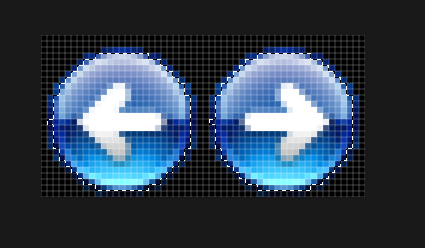
按一下M键或L键（套索之类的选择工具才有那些对应的右键菜单项），右键图片主体，点“选择反向”。
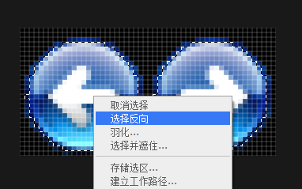
按下键盘上的Delete键，发现图片被抠干净了。
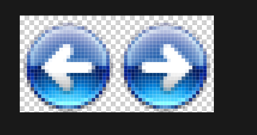
接着导出PNG即可。
用FFmpeg直接转
刚才的操作比较麻烦，其实一句命令就能搞定，FFmpeg支持这种32位色的BMP格式。
ffmpeg -i in.bmp out.png
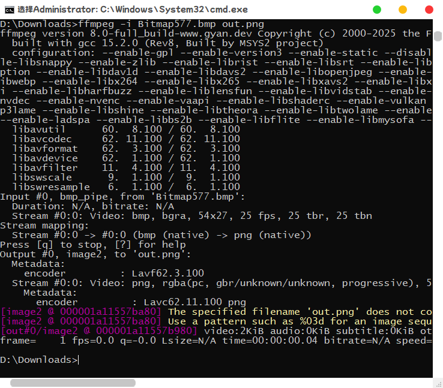
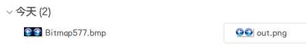
怎么样，是不是超级简单？
逆操作？
编辑好的png图片转回bmp其实也很简单，就是把上面的命令反过来。
ffmpeg -i in.png out.bmp
注意事项
这个教程只是以Windows资源举例，事实上，任何用32位BMP的程序都可以这样修改贴图。但是不要以为所有显示出来是透明的BMP都能这样干。
比如像下面这张图，它本身是一张八位色图，通过颜色键控（Color Keying）将某一特定颜色（比如这里的品红色）不显示出来，给人一种“透明”的感觉。要转换这种图片反而还是最简单的，直接PS抠掉颜色就行。
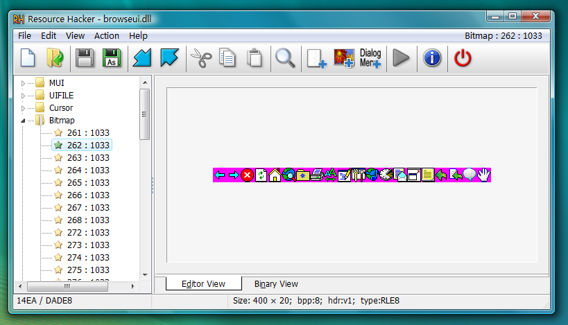
还有一种情况叫分离掩码图，会使用两张独立的BMP来合成透明效果。一张是存储颜色的“前景图”，另一张黑白“掩码图”则记录透明区域。
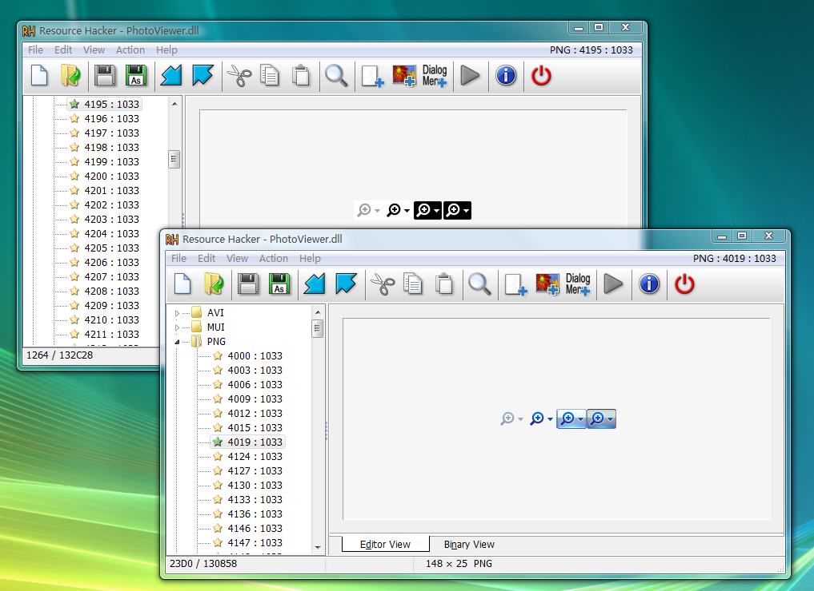